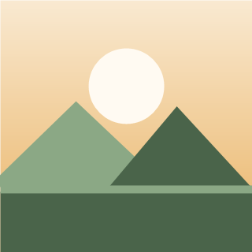
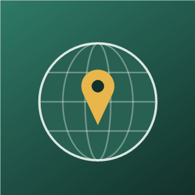
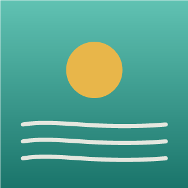
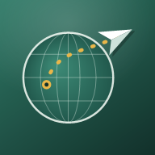

Voici 5 propositions, très différentes. Regarde-les comme elles apparaîtront sur ton téléphone (coins arrondis). Dis-moi simplement le numéro que tu préfères — ou ce que tu voudrais changer (couleur, dessin…).



